기계정비산업기사 (2005-03-20 기출문제)
1과목: 공유압 및 자동화시스템
1. 유압펌프에 관련되는 용어로서 가변용량형 펌프를 올바르게 설명한 것은?
- 토출 에너지가 일정한 펌프
- 토출량을 변화시킬 수 있는 펌프
- 기어가 내접 물림하는 형식의 펌프
- 기어가 외접 물림하는 형식의 펌프
(정답률: 80%)

2. 다음의 기호가 나타내는 것은 무엇인가?
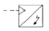
- 적산 유량계
- 회전 속도계
- 토크계
- 신호 변환기
(정답률: 71%)
3. 다음 밸브의 설명으로 틀린 것은?
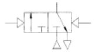
- 3/2-way밸브
- 메모리형
- 유압에 의한 작동
- 정상 상태 닫힘형
(정답률: 75%)
4. 공압 실린더나 공기 탱크내의 공기를 급속히 방출할 필요가 있을 때나, 공압 실린더 속도를 증가시킬 필요가 있을때 사용되는 것으로 가장 적당한 밸브는?
- 2압밸브
- 셔틀밸브
- 급속배기밸브
- 체크밸브
(정답률: 87%)
5. 다음 그림의 속도제어 회로의 명칭은?
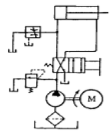
- 재생 회로
- 블리드-오프 회로
- 미터-인 회로
- 미터-아웃 회로
(정답률: 65%)
6. 다음 중 기어 펌프의 특징을 나타낸 것은?
- 토출압력에 대한 맥동이 적고 소음이 작다.
- 기밀이 유지되어 압력저하가 일어나지 않는다.
- 가변용량형으로 제작이 가능하다.
- 구조가 간단하고 가격이 저렴하다.
(정답률: 70%)
7. 다음 유공압기호의 명칭으로 옳은 것은?
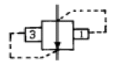
- 시퀀스 밸브
- 일정비율 감압 밸브
- 무부하 밸브
- 카운터 밸런스 밸브
(정답률: 56%)
8. 다음 중 속도제어 회로가 아닌 것은?
- 미터인 회로
- 미터아웃 회로
- 블리드 온 회로
- 블리드 오프 회로
(정답률: 54%)
9. 공기압에 사용되는 압력조절밸브(감압밸브)의 용도는?
- 회로 내의 압력을 감압, 일정하게 유지시킨다.
- 실린더를 순차적으로 작동시킨다.
- 실린더의 속도를 조절한다.
- 압력변화를 전기신호로 바꾸어 주는 변환기이다.
(정답률: 86%)
10. 양 끝의 지름이 다른 관이 수평으로 놓여 있다. 왼쪽에서 오른쪽으로 물이 정상류를 이루고 매초 2.8ℓ의 물이 흐른다. B부분의 단면적이 20cm2이라면 B부분에서 물의 속도는 얼마가 되겠는가?
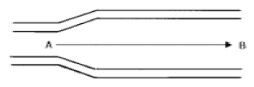
- 14cm/sec
- 56cm/sec
- 140cm/sec
- 56m/sec
(정답률: 72%)
11. 다음 그림의 시퀀스 회로도에 대한 설명으로 틀린 것은?
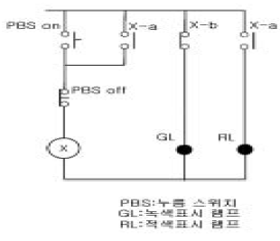
- 이 회로에 전원이 투입되면 GL이 무조건 ON된다.
- PBSON을 누르면 계전기 코일 X가 여자되어 접점 X-b는 열리고 접점 X-a는 닫혀 GL은 소등되고 RL은 점등된다.
- 답항"나."의 상태에서 PBSON을 놓으면 계전기 코일 X에 전류가 끊겨 접점 X-b는 닫히고 접점 X-a는 열려 GL은 점등되고 RL은 소등된다.
- PBSON과 PBSOFF를 동시에 누르면 계전기 코일 X는 동작되지 않아 GL은 점등되고 RL은 소등된다.
(정답률: 49%)
12. PLC 설치시 전기적 잡음의 대책으로 접지를 할 때의 방법으로 맞는 것은?
- PLC 를 접지하지 않을 때는 제어반 접지는 확실하게 해야 한다.
- 접지점은 될 수 있는 대로 PLC본체와 멀리 설정해야 한다.
- 접지용 전선은 2mm2 이하의 선을 사용한다.
- 전용접지를 할 수 없는 경우에는 공통 접지를 사용할 수 없다.
(정답률: 57%)
13. 다음 중 PLC 출력 모듈의 종류로 볼 수 없는 것은?
- 트랜지스터 출력
- 계전기 출력
- 콘덴서 출력
- SSR 출력
(정답률: 40%)
14. 자동 세탁기는 세탁시간을 정해놓으면 자동적으로 세탁이 되는데 이는 어떤 제어라 할 수 있는가?
- 시퀀스 제어
- 되먹임 제어
- 계산기 제어
- 프로세스 제어
(정답률: 71%)
15. 제어시스템의 구성요소가 아닌 것은?
- 입력부
- 제어부
- 출력부
- 감압부
(정답률: 80%)
16. 다음의 공압 선형액추에이터 중 구조와 기능 면에서 다른 실린더는?
- 다이어프램 실린더
- 충격 실린더
- 격판 실린더
- 벨로스 실린더
(정답률: 36%)
17. 50bar의 시스템 압력을 사용하는 유압모터의 전효율이 80%이며, 1회전당 20cm3의 유량을 필요로 한다면 출력토크는 약 몇 N·m인가?
- 8.5
- 12.7
- 15.9
- 19.9
(정답률: 54%)
18. 자동화 시스템의 신뢰성을 나타내는 척도가 아닌 것은?
- MTTF
- 가동율
- MTBF
- 신뢰도
(정답률: 59%)
19. 센서의 신호형태 중 시간과 정보 모두 불연속적인 신호는?
- 아날로그 신호(analog singnal)
- 연속신호(continuous singnal)
- 이산시간신호(discrete-time singnal)
- 디지털신호(digital signal)
(정답률: 48%)
20. 어떤 제어시스템에서 0에서 5V를 4개의 2진 신호만을 사용하여 간격을 나눌 때 표시되는 최소값은?
- 0.313V
- 1.250V
- 0.625V
- 0.039V
(정답률: 39%)
2과목: 설비진단관리 및 기계정비
21. 기계장치에 사용되고있는 로울러 베어링이 해머로 두드리는 것과 같은 이상음이 주기적으로 발생 할 때 원인으로 판단 할 수 있는 것은?
- 베어링 궤도륜의 긁힘
- 베어링이 본 궤도에서 벗어나 있음
- 윤활유의 적정량 공급 부족
- 베어링 밀봉부 그리이스에 먼지가 들어감
(정답률: 53%)
22. 주기(T), 주파수(f), 각진동수(ω)의 관계가 올바른 것은? (문제 오류로 현재 복원중입니다. 보기 내용을 아시는 분들께서는 오류 신고를 통하여 보기 작성 부탁 드립니다. 정답은 가번입니다.)
- ω = 2πf
- ω = 2πT
- 복원중
- 복원중
(정답률: 74%)
23. 진동의 상한과 하한의 거리를 무엇이라고 하는가?
- 변위
- 속도
- 가속도
- 진동수
(정답률: 65%)
24. 다음 보기를 참조하여 광의의 개념으로서 설비관리의 4단계 순서로 맞는 것은?
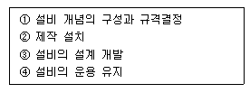
- ①-②-③-④
- ①-③-②-④
- ②-①-③-④
- ②-④-③-①
(정답률: 73%)
25. 자유도계에서 기초에 미치는 진동전달률 T를 구하는 식으로 알맞는 것은? (단, f:강제진동수, fn:고유진동수) (문제 오류로 현재 복원중입니다. 보기 내용을 아시는 분들께서는 오류 신고를 통하여 보기 작성 부탁 드립니다. 정답은 가번입니다.)
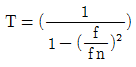
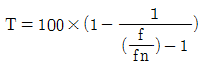
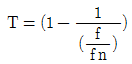
- 복원중
(정답률: 42%)
26. 다음 접착제의 종류 중 용매 또는 분산매의 증발에 의하여 경화되는 것은?
- 중합제형 접착제
- 유화액형 접착제
- 열용융형 접착제
- 감압형 접착제
(정답률: 65%)
27. 공장에서 소음을 방지하기 위한 일반적인 방법이 아닌 것은?
- 흡음과 차음
- 완충물 시공
- 소음원의 차단
- 소음원의 제거 및 억제
(정답률: 35%)
28. 나사의 피치가 1mm이고, 1줄 나사일 때 리드는 몇 mm인가?
- 1
- 2
- 3
- 4
(정답률: 75%)
29. 저속 회전에 사용되던 길이 2m의 축이 구부러져 수정하고 자 할 때 사용되는 것은?
- 짐 크로(Jim crow)
- 스크류 엑스트랙터
- 토크 렌치(Torque wrench)
- 임펙트 렌치(Impact wrench)
(정답률: 69%)
30. 그리스 윤활에 비하여 윤활유 윤활의 장점은?
- 급유 간격이 길다.
- 누설이 적다.
- 밀봉효과가 크다.
- 냉각효과가 크다.
(정답률: 53%)
31. 배관의 직선 이음에 사용되지 않는 배관용 관이음쇠는?
- 유니언
- 니플
- 플러그
- 부싱
(정답률: 42%)
32. 소음방지 재료의 흡음률은?
- 흡수된 에너지 / 입사에너지
- 입사에너지 / 흡수된 에너지
- 흡수된 에너지 / 반사 에너지
- 반사 에너지 / 흡수된 에너지
(정답률: 60%)
33. 배관을 고정시키는 장치 중 배관의 높낮이를 조절할 수 있도록 제작된 배관 지지 장치는?
- 새들밴드 지지
- 턴 버클 지지
- 덕트 위 고정
- U볼트 지지
(정답률: 43%)
34. 보전비를 들여서 설비를 만족한 상태로 유지하여 막을 수 있었던 생산성의 손실을 무엇이라고 하는가?
- 재고 손실
- 자연재해에 의한 손실
- 기회 손실
- 기술 부족에 의한 손실
(정답률: 77%)
35. 스냅 링 또는 리테이너 링을 분해하거나 조립할 때 사용하는 공구는?
- 조합 플라이어(combination plier)
- 스톱 링 플라이어(stop ring plier)
- 롱 노즈 플라이어(long nose plier)
- 플라이어(plier)
(정답률: 62%)
36. 다음 현상 중 음의 간섭현상에 속하지 않는 것은?
- 보강간섭
- 소멸간섭
- 맥놀이
- 굴절현상
(정답률: 36%)
37. 볼트, 너트의 이완방지법이 아닌 것은?
- 분활핀에 의한 방법
- 로크너트에 의한 방법
- 특수너트에 의한 방법
- 둥근와셔에 의한 방법
(정답률: 58%)
38. 정비용 공구 중에서 체결용 공구가 아닌 것은?
- 기어풀러
- 더블오프셋 렌치
- 훅 스패너
- L- 렌치
(정답률: 71%)
39. 그림에서와 같이 볼트를 체결할 때 필요한 죔토크는 몇 kg-m인가?
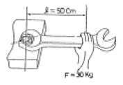
- 300
- 150
- 30
- 15
(정답률: 55%)
40. 설비보전 조직의 기본형에서 집중보전의 단점으로 잘못된 것은?
- 보전요원이 공장 전체에서 작업을 하기 때문에 적절한 관리감독을 할 수 없다.
- 작업표준을 위한 시간 손실이 많다.
- 일정작성이 곤란하다.
- 대수리작업 처리가 어렵다.
(정답률: 44%)
3과목: 공업계측 및 전기전자제어
41. 제어 시스템의 구성 중 조작부의 구비조건으로 거리가 먼 것은?
- 응답성이 좋고 히스테리시스가 클 것
- 제어신호에 정확히 동작할 것
- 주위환경과 사용조건에 충분히 견딜 것
- 보수점검이 용이할 것
(정답률: 74%)
42. 다음 사이리스터 중에서 단방향성 소자는?
- 트라이액
- 다이액
- SSS
- SCR
(정답률: 63%)
43. 다음 SCR을 아날로그 회로시험기로 양부 측정방법에 대한 설명으로 옳지 않은 것은?
- 캐소드(K)와 게이트(G) 사이의 순방향 저항값은 약 10 정도이다.
- 캐소드(K)와 애노드(A) 사이의 순방향 저항값은 무한대이다.
- 애노드(K)와 게이트(G) 사이의 순방향 저항값은 약 10 정도이다.
- 캐소드(K)와 애노드(A) 사이의 역방향 저항값은 무한대이다.
(정답률: 32%)
44. 연산증폭기를 이용한 회로 중 전압 플로워(Voltage Follower)에 관한 설명이다. 거리가 먼 것은?
- 높은 입력 임피던스를 갖는다.
- 낮은 출력 임피던스를 갖는다.
- 이득이 1에 가까운 비반전 증폭기이다.
- 입력과 극성이 반대로 되는 출력을 얻을 수 있다.
(정답률: 47%)
45. 어느 소자를 나타내는 기호 중 2SKOO에서 K는 무엇을 나타내는가?
- SCR
- TRIAC
- UJT
- N-채널 FET
(정답률: 35%)
46. 연산기에 널리 사용되는 입력신호의 전압은?
- DC 1∼5[V]
- DC 5∼10[V]
- AC 5∼10[V]
- AC 10∼15[V]
(정답률: 28%)
47. 이상적인 연산증폭기가 갖추어야 할 조건 중 틀린 것은?
- 입력저항은 무한대이다.
- 출력저항은 0 이다.
- 전압 이득은 무한대이다.
- 동위상 신호 제거비는 0 이다.
(정답률: 59%)
48. 소용량 농형 유도전동기에 정격전압을 가하면 기동전류는 정격전류의 몇 배가 흐르는가?
- 1∼2배
- 3∼4배
- 4∼6배
- 7∼10배
(정답률: 50%)
49. 동일 거리를 나가는데 요하는 초음파 펄스의 흐름과 같은 방향과 반대 방향의 시간차에 의해 평균 유속을 구하는 싱어라운드(sing around)법을 측정 원리로 하는 유량계는?
- 초음파식 유량계
- 터빈식 유량계
- 와류식 유량계
- 용적식 유량계
(정답률: 63%)
50. 그림의 회로에서는 SCR을 동작시키려면 X점의 전압을 몇 V로 하면 되는가? (단, 2N 3669를 동작시키는데 필요한 게이트전류는 정상 상태에서 20mA 이다.)
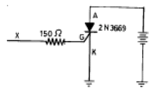
- 3.0
- 3.6
- 7.0
- 7.5
(정답률: 44%)
51. 다음 중 프로세스 제어에 속하지 않는 것은?
- 압력
- 유량
- 온도
- 자세
(정답률: 77%)
52. 연산 증폭기(op-amp)에 부귀환(negative feed back)회로가 있다면?
- 입력과 출력 임피던스가 증가한다.
- 출력 임피던스는 감소하고, 대역폭은 증가한다.
- 출력 임피던스와 대역폭이 감소된다.
- 임피던스와 대역폭에 영향을 미치지 않는다.
(정답률: 46%)
53. 1차 지연요소의 스텝응답이 시정수 T를 경과했을 때, 그 값의 최종 도달 값에 대한 비율은?
- 50[%]
- 63[%]
- 90[%]
- 98[%]
(정답률: 58%)
54. 입력신호가 어떤 정상상태에서 다른 상태로 변화했을 때 출력신호가 정상상태에 도달하기까지의 특성을 무엇이라 하는가?
- 임펄스 응답
- 과도 응답
- 램프 응답
- 스텝 응답
(정답률: 45%)
55. 다음 논리회로의 논리식은?
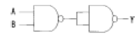
- Y = A + B
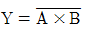
- Y = A Χ B
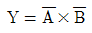
(정답률: 32%)
56. 직류분권 전동기에서 단자 전압이 일정할 때 부하 토크가 1/4 이 되면 부하 전류는 몇 배가 되는가?
- 1/4
- 2
- 1/2
- 4
(정답률: 35%)
57. 평균 반지름이 10[㎝]이고 감은 회수가 20회인 원형코일에 2[A]의 전류를 흐르게 하면 이 코일중심의 자장의 세기는 몇 [AT/m]인가?
- 100
- 200
- 300
- 400
(정답률: 42%)
58. 성분제어의 특징으로 틀린 것은?
- 무용시간, 시정수가 대단히 크다.
- 프로세스 특성이 비선형으로 되는 경우가 많다.
- 촉매의 열화 등에 의해 프로세스 특성이 경시 변화한다.
- 성분의 온라인 측정이 쉽다.
(정답률: 38%)
59. 그림의 회로의 명칭은?
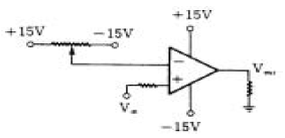
- 차동 증폭기
- 전압 비교기
- 비반전 증폭기
- 전류-전압 변환기
(정답률: 34%)
60. 전자계전기의 기능이라 볼 수 없는 것은?
- 증폭기능
- 전달기능
- 연산기능
- 충전기능
(정답률: 64%)
4과목: 기계정비 일반
61. 다음 중 비중이 가장 큰 금속은?
- Zn
- Cr
- Au
- Mo
(정답률: 32%)
62. 다음 항공기용 신소재 중 비강도(比强度)가 가장 큰 것은?
- 유기재료(흑연-에폭시) 복합재
- 티타늄 복합재
- 알루미늄 복합재
- 카본 복합재
(정답률: 36%)
63. 공구재료가 갖추지 않아도 되는 성질은?
- 적당한 인성
- 열처리성
- 취성
- 내마멸성
(정답률: 49%)
64. 다음 중 담금질 불량의 원인으로 틀린 것은?
- 재료 선택의 부정확
- 담금질성
- 냉각속도
- 탄성
(정답률: 40%)
65. 다음 중 열팽창계수가 적어 바이메탈 재료로 가장 적합한 것은?
- 듀랄루민(duralumin)
- 백금-로듐(Pt-Rh)
- 퍼말로이(permalloy)
- 인바(invar)
(정답률: 30%)
66. 탄소강의 성질을 설명한 것으로 틀린 것은?
- 탄소량의 증가에 따라 비중·열팽창계수·열전도도는 감소한다.
- 탄소량의 증가에 따라 비중·열팽창계수·열전도도는 증가한다.
- 탄소량의 증가에 따라 비열·전기저항·항자력은 증가 한다.
- 탄소량의 증가에 따라 내식성은 감소한다.
(정답률: 44%)
67. 철사를 끊으려고 손으로 여러 번 구부렸다 폈다 하면 구부러지는 부분에 경도가 증가된다. 가장 이유는?
- 쌍정현상 때문에
- 가공경화현상 때문에
- 질량효과 때문에
- 결정입자가 충격을 받기 때문에
(정답률: 45%)
68. 다음 중 고강도용 알루미늄 합금인 두랄루민의 조성은?
- Al-Cu-Mg-Mn
- Al-Cu-Mn-Mo
- Al-Cu-Ni-Mg
- Al-Cu-Ni-Si
(정답률: 40%)
69. 다음 중 주강(cast steel)이 주철(cast iron)보다 부족한 성질인 것은?
- 충격치
- 인장강도
- 유동성
- 굽힘강도
(정답률: 32%)
70. 액체 침탄법의 이점에 대한 설명으로 틀린 것은?
- 온도조절이 용이하고 일정시간을 지속할 수 있다.
- 침탄층의 깊이가 깊다.
- 산화방지 및 시간절약의 효과가 있다.
- 균일한 가열이 가능하고 제품변형을 억제한다.
(정답률: 30%)
71. 베어링의 내경 번호가 00 이면 내경치수는 몇 mm인가?
- 5mm
- 10mm
- 15mm
- 20mm
(정답률: 41%)
72. 기어에서 전위량을 모듈로 나눈 값을 무엇이라 하는가?
- 물림률
- 전위계수
- 언더컷
- 미끄럼률
(정답률: 63%)
73. 지름 50㎜의 연강축을 사용하여 350rpm으로 40㎾을 전달할 묻힘키의 길이는 몇 ㎜ 정도가 적당한가? (단, 키 재료의 허용전단응력은 5㎏f/mm2, 키의 폭과 높이 b x h = 15mm x 10mm 이며 전단저항만 고려한다.)
- 38㎜
- 46㎜
- 60㎜
- 78㎜
(정답률: 32%)
74. 회전 운동을 직선 운동으로 바꿀 때 쓰이는 기어는 다음의 어느 것인가?
- 헬리컬 기어
- 베벨 기어
- 랙과 피니언
- 웜과 웜기어
(정답률: 52%)
75. 평벨트에 비해 V 벨트 전동의 특징이 아닌 것은?
- 미끄럼이 적고, 전동 효율이 좋다.
- 축 사이의 거리가 평벨트보다 짧다.
- 축간거리를 마음대로 할 수 있다.
- 운전이 정숙하고 충격을 완화한다.
(정답률: 42%)
76. 다음 중 전단력이 작용하는 곳에 가장 적합한 볼트는?
- 스터드 볼트
- 탭 볼트
- 리머 볼트
- 스테이 볼트
(정답률: 34%)
77. 지름 20㎜, 피치 2㎜인 3줄 나사를 1/2 회전하였을 때 이나사의 진행거리는?
- 1㎜
- 3㎜
- 4㎜
- 6㎜
(정답률: 56%)
78. 외력의 작용 없이 스스로 풀어지지 않는 나사의 자립조건은? (단, α는 리드각, ρ는 마찰각이다.)
- ρ≥ α
- ρ= 2α
- α< 2ρ
- ρ> 2α
(정답률: 38%)
79. 그림과 같은 스프링장치에서 각각의 스프링의 상수가 K1= 4㎏f/㎝, K2 = 5㎏f/㎝, K3 = 6㎏f/㎝ 일 때, 하중방향으로의 처짐량이 δ=150㎜ 일 경우 하중 P는 얼마인가?
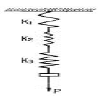
- P = 251㎏f
- P = 225㎏f
- P = 31.4㎏f
- P = 24.3㎏f
(정답률: 27%)
80. 하중이 축에 직각으로 작용하는 곳에 쓰이는 베어링은?
- 레이디얼 베어링
- 컬러 베어링
- 스러스트 베어링
- 피벗 베어링
(정답률: 36%)